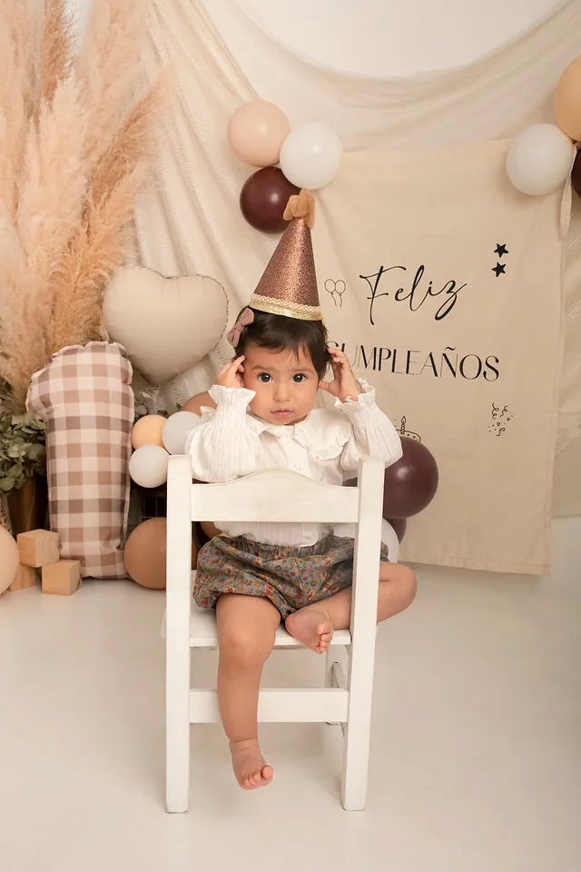
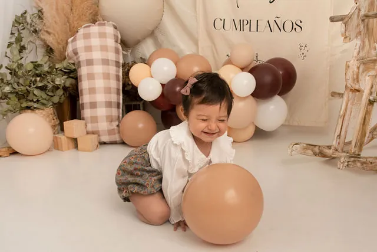
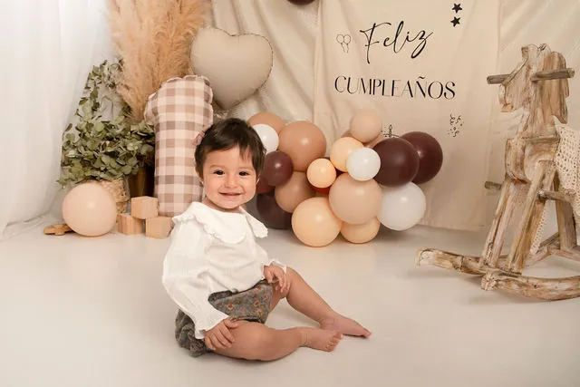
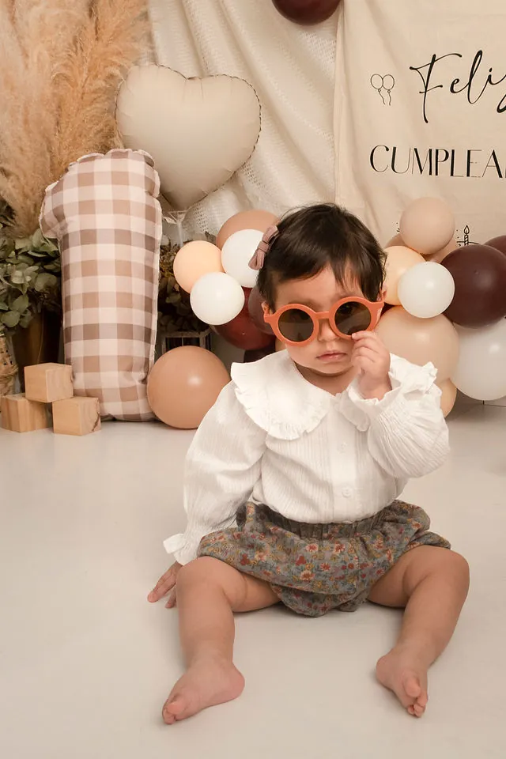

Ceremonia religiosa
🗓️ Domingo 29/11
🕐 10:00 hs.
📍Iglesia San Francisco de Asís
Dirección: 14 y 153


Luego festejamos juntos
🕐 12 a 17 hs.
📍 Quinta El Chañar
Dirección: Calle 97 (ex san Gabriel)
Los Talas, Berisso.

Traé equipo de mate 🧉
Y no olvides confirmar asistencia a mis papis antes del 20/11
Confirmar asistencia